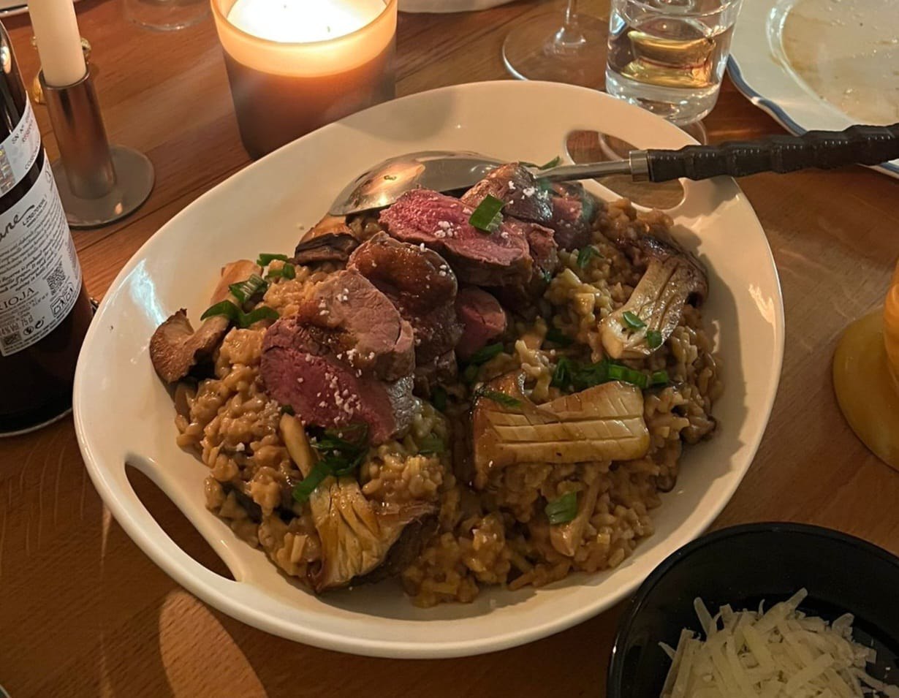

Main
Duck Risotto for 4 people

2x Shallots;
1x Garlic clove
200-250g of Risotto Rice
500g wild or diverse Mushrooms
Salted butter, 1 big tablespoon is enough for us
Dark Miso Paste
Soy Sauce
Vegetable broth (you can do it yourself or buy it)
3x big King Trumpet Mushrooms
Parmesan cheese, you will need to grate it
1x medium-large Duck Breast
White whine (for cooking but if you want to invest, go for it)
Steps
Chop the mushrooms in medium portions, you don't want them very thin;
In a small bowl mix the Miso Paste with 3 tablespoons of water and a splash of soy sauce
Cut the King Trumpet Mushrooms in half. Make some cuts (image a chessboard) on them, not deep, just to let the oils enter it
Chop the shallots and garlic in thin slices and add them to a pan with some olive oil until shallots are golden;
Add the rice, let it fry until crispy (not burnt, crispy);
Fry the King Trumpet Mushrooms with some olive oil, the cuts should be the side that is on the pan and let them set aside;
Add the wine. When all of it gets absorbed gradually add the broth. This is the tricky part, you need to find balance between the broth evaporating while not burning the rice at the same time so that you can add another portion of broth;
Add the mushrooms to a different pan with a bit of olive oil.
Add the bowl of Miso Paste to the mushrooms, let it cook for ~10mins. DON'T LET THE MUSHROOMS OVERCOOK. We want the sauce to later add to the risotto;
10 minutes before the risotto is done, fry the duck, in high heat. You NEED to start with the skin side on the pan so that the fat allows you to cook it better. Turn regularly and cook until your own taste;
When the risotto is almost done, add the mushrooms and the butter. Two minutes after that, the grated cheese.
Once the duck is done, slice it. Add the King Trumpet Mushrooms to the fat of the duck just to add some extra taste and heat them a little;
Serve the risotto with the duck and the King Trumpet Mushrooms on the top;
Enjoy!
Next page Previous page